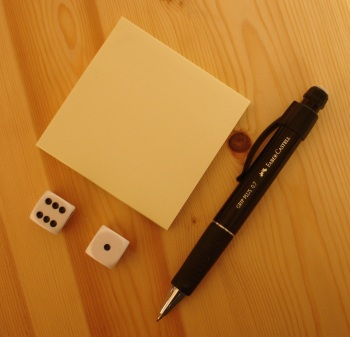

Randomizing Output
Coding Horror asks the question what's on your utility belt?, or "what do you take with you when you go out?" So here's my answer:

- Post-It notes - I like the traditional yellow. For me they have a greater versatility than electronic counterparts - after all I just want to jot things down, not write a book. The other problem with electronic note taking, is message-medium confusion. By the time I've started up the note taking machine, and opened the little app, I've forgotten what I want to write. It's even worse if it's a bit of math or a little picture. Even more ceremony. I can also stick the Post-It's into the analogue book I'm reading.
- Pencil - mechanical obviously. My current favourite is a Faber Castel GRIP PLUS 0.7. I find the 0.7 mm diameter graphite more satisfying to write with than the more common 0.5mm pencil. I also prefer a 2B lead, but they are difficult to buy so I normally settle for HB. The Faber has also got an excellent eraser.
- Dice - for when I need to randomize my output. Humans find it almost impossible to think of random numbers, but often the optimal strategy is to behave randomly, hence the need for a portable random number generator.